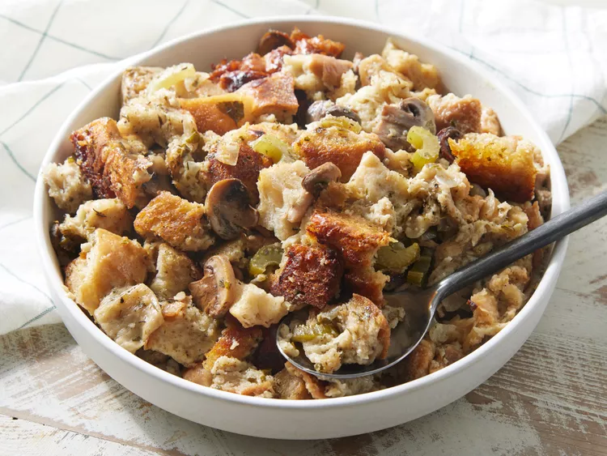

Slow Cooker Stuffing

Just in time for thanksgiving!
This crockpot stuffing is an easy way to make extra stuffing for a large crowd — and it frees up stove space because it cooks in a slow cooker. This recipe is designed for use in a standard 4-quart slow cooker and is very tasty and moist!
Ingredients
- 1 cup butter
- 2 cups chopped onion
- 2 cups chopped celery
- 12 ounces sliced mushrooms
- 1/4 cup chopped fresh parsley
- 12 cups dry bread cubes
- 1 1/2 teaspoons salt
- 1 1/2 teaspoons dried sage
- 1 teaspoon poultry seasoning
- 1 teaspoon dried thyme
- 1/2 teaspoon dried marjoram
- 1/2 teaspoon ground black pepper
- 4 1/2 cups chicken broth, or as needed
- 2 large eggs, beaten
Steps
- Gather all ingredients
- Melt butter in a skillet over medium heat. Cook and stir onion, celery, mushroom, and parsley in butter until slightly softened, 5 to 8 minutes.
- Place bread cubes in a very large mixing bowl. Spoon cooked vegetables over bread cubes. Season with salt, sage, poultry seasoning, thyme, marjoram, and pepper.
- Pour in enough broth to moisten, then mix in eggs.
- Cover and cook on High for 45 minutes, then reduce heat to Low and cook for 4 to 8 hours.